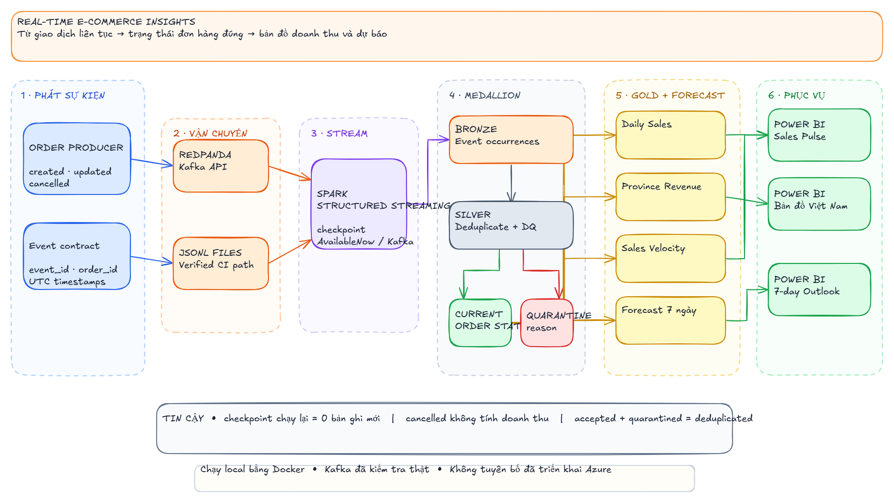

Trạng thái đổi liên tục
Đơn hàng có thể created, updated hoặc cancelled sau nhiều sự kiện.
Real-time E-commerce
Từ sự kiện đơn hàng liên tục đến doanh thu theo tỉnh, sales velocity và dự báo 7 ngày.
01 — Bài toán
Đơn hàng có thể created, updated hoặc cancelled sau nhiều sự kiện.
Doanh thu và vận tốc bán thay đổi khác nhau giữa các tỉnh.
Vận hành cần tín hiệu gần thời gian thực, không chờ batch ngày hôm sau.
Mục tiêu: xử lý event an toàn, tái dựng đúng trạng thái đơn và xuất data mart cho BI.
02 — Event contract
Schema rõ giúp producer và consumer độc lập.
event_id giúp loại duplicate khi retry.
event_ts giúp chọn trạng thái mới nhất.
Dữ liệu sai contract đi vào quarantine.
03 — Kiến trúc tổng thể

04 — Hai nguồn vào
Producer phát sự kiện liên tục; Spark đọc topic qua Kafka API.
Cùng schema, cùng transform; chạy nhanh và ổn định trên GitHub Actions.
Đường file không “giả vờ là Kafka”; nó kiểm chứng logic dữ liệu. Kafka path kiểm chứng tích hợp streaming thật.
05 — Structured Streaming
Nếu không có event mới, checkpoint ngăn xử lý lặp.
Demo tích hợp đã đọc và ghi nhận offset thật.
06 — Medallion
“Hệ thống đã nhận những event nào?” Giữ event occurrence và metadata ingest.
“Event nào hợp lệ?” Deduplicate, chuẩn hóa, kiểm tra schema và business rules.
“Đơn đang ở trạng thái nào?” Chọn event mới nhất theo từng order_id.
Quarantine lưu bản ghi không hợp lệ cùng lý do; không làm “biến mất” dữ liệu lỗi.
07 — Trạng thái đơn hàng
Window theo order_id, sắp xếp event_ts giảm dần, lấy bản ghi mới nhất.
Đơn hủy vẫn tồn tại trong lịch sử nhưng bị loại khỏi doanh thu hoạt động.
08 — Gold + Forecast
Doanh thu, số đơn và AOV theo ngày.
So sánh nhu cầu và đóng góp doanh thu theo tỉnh.
Tốc độ phát sinh đơn/doanh thu theo cửa sổ thời gian.
Dự báo ngắn hạn để hỗ trợ tồn kho và kế hoạch bán.
09 — Power BI
Doanh thu hiện tại, số đơn, AOV và sales velocity.
Heatmap theo tỉnh để tìm vùng cầu cao hoặc suy giảm.
So sánh actual với forecast và theo dõi sai số.
Power BI đọc data mart; trạng thái đơn và logic loại cancelled được xử lý trước đó.
10 — Chạy local
Redpanda cung cấp Kafka API local.
Producer phát created / updated / cancelled.
Checkpoint chứng minh replay an toàn.
CI dùng JSONL path để kết quả xác định.
11 — Bằng chứng chạy thật
42 quarantined; accepted + quarantined = 1,400.
33 đơn cancelled được giữ lịch sử nhưng loại khỏi doanh thu.
694 dòng daily sales, 12 tỉnh và forecast 7 ngày.
Bronze 1,428 → deduplicated 1,400 → duplicate 28; sales velocity 999 dòng.
12 — Local → Azure
Redpanda · local filesystem/MinIO · PySpark · Docker · Power BI files.
Event Hubs/Kafka · ADLS/Delta · Databricks · managed orchestration · Power BI Service.
Repo không tuyên bố đã triển khai Azure; nó chứng minh kiến trúc và hành vi cốt lõi bằng môi trường local.
13 — Điều dự án chứng minh
Event contract và schema enforcement.
Checkpoint, replay và idempotency.
Tái dựng current state từ event history.
Gold marts + forecast phục vụ quyết định.
“Tôi tách kiểm chứng transform khỏi kiểm chứng Kafka integration, để CI ổn định nhưng vẫn có smoke test streaming thật.”
Tóm tắt
Một pipeline streaming có thể chạy lại, kiểm chứng và giải thích từ event đến dashboard.
Mở file ghi chú đi kèm để đọc phần giải thích chi tiết theo từng slide.